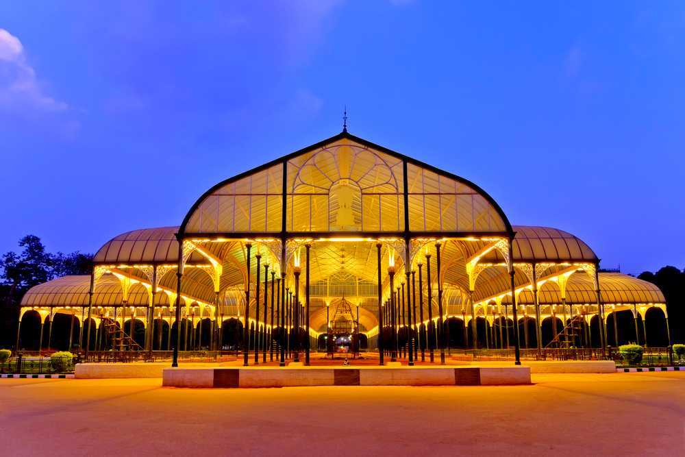

Lalbagh Botanical Garden
Gardens
Lalbagh Botanical Garden or shortened Lalbagh, is an old botanical garden in Bengaluru, India. First planned and laid out during the dalavaiship of Hyder Ali and later managed under numerous British Superintendents before Indian Independence.
Timings : 6:00 AM - 7:00 PM
Entry Fee : Adults: INR 25 (After 8:00 AM)
Children below 12 Years: Free
Camera: INR 60